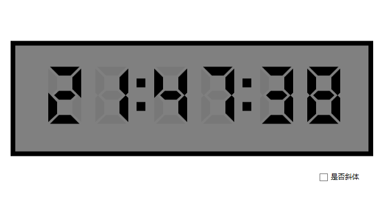
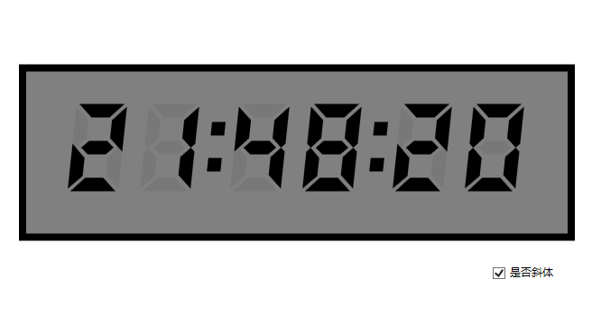
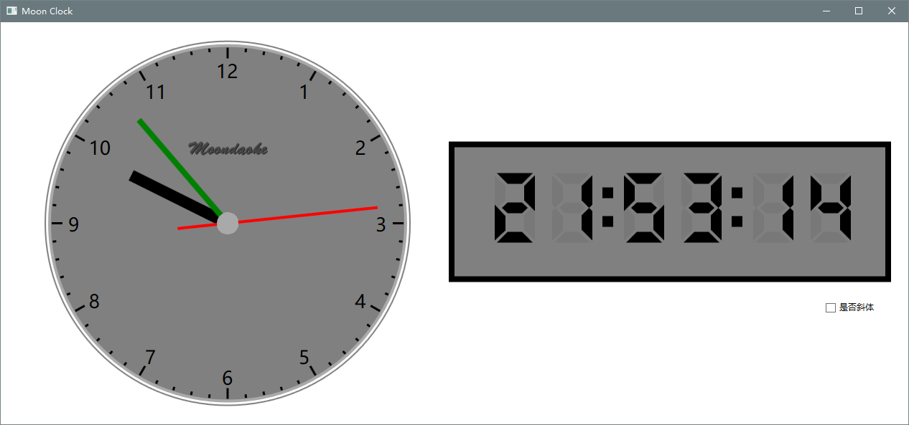

继续数字时钟。上一篇写好了数字笔划专用的DigitLine类。现在是时候使用它了。下面对一些主要代码进行说明。
打开MainWindow.xaml.cs文件：
（1）添加字段变量
// 数字时钟字段定义
DigitLine[] digitLine = new DigitLine[6];
DigitLine[] digitLineBack = new DigitLine[6];
DigitLine[] digitColon = new DigitLine[2];
DigitLine[] digitColonBack = new DigitLine[2];第一对类数组变量用于6个数字及其背景字样，第二对是冒号用的。
（2）在构造方法中进行变量初始化
// 初始化数字
for (int i=0; i<6; i++)
{
digitLine[i] = new DigitLine(Brushes.Black);
digitLineBack[i] = new DigitLine(new SolidColorBrush(Color.FromArgb(255, 120, 120, 120)));
}
// 初始化冒号
for (int i=0; i<2; i++)
{
digitColon[i] = new DigitLine(Brushes.Black);
digitColonBack[i] = new DigitLine(new SolidColorBrush(Color.FromArgb(255, 120, 120, 120)));
}（3）开始设置显示元素
这个方法用于显示数字表外边框：
/// <summary>
/// 显示数字表矩形外框
/// </summary>
/// <param name="pos"></param>
/// <param name="width"></param>
/// <param name="height"></param>
/// <param name="color"></param>
private void DrawDigitRect(Point pos, double width, double height, Brush color)
{
Rectangle rect = new Rectangle();
rect.Width = width;
rect.Height = height;
rect.Fill = color;
Canvas.SetLeft(rect, pos.X);
Canvas.SetTop(rect, pos.Y);
digitCanvas.Children.Add(rect);
}
显示数字和冒号的背景，数字的话时只要画6个8就可以了，这个很容易理解，看一下真实的电子表就清楚了。
/// <summary>
/// 显示背景数字（底色）
/// </summary>
/// <param name="brush"></param>
private void DrawDigitTimeBack(Brush brush)
{
// 第1、2位--小时
Canvas.SetLeft(digitLineBack[0].Path0_9[8], 40);
Canvas.SetTop(digitLineBack[0].Path0_9[8], 80);
digitCanvas.Children.Add(digitLineBack[0].Path0_9[8]);
Canvas.SetLeft(digitLineBack[1].Path0_9[8], 120);
Canvas.SetTop(digitLineBack[1].Path0_9[8], 80);
digitCanvas.Children.Add(digitLineBack[1].Path0_9[8]);
// 冒号
Canvas.SetLeft(digitColonBack[0].PathColon, 190);
Canvas.SetTop(digitColonBack[0].PathColon, 100);
digitCanvas.Children.Add(digitColonBack[0].PathColon);
// 第二冒号
Canvas.SetLeft(digitColonBack[1].PathColon, 370);
Canvas.SetTop(digitColonBack[1].PathColon, 100);
digitCanvas.Children.Add(digitColonBack[1].PathColon);
// 3、4位--分钟
Canvas.SetLeft(digitLineBack[2].Path0_9[8], 220);
Canvas.SetTop(digitLineBack[2].Path0_9[8], 80);
digitCanvas.Children.Add(digitLineBack[2].Path0_9[8]);
Canvas.SetLeft(digitLineBack[3].Path0_9[8], 300);
Canvas.SetTop(digitLineBack[3].Path0_9[8], 80);
digitCanvas.Children.Add(digitLineBack[3].Path0_9[8]);
// 5、6位--秒钟
Canvas.SetLeft(digitLineBack[4].Path0_9[8], 400);
Canvas.SetTop(digitLineBack[4].Path0_9[8], 80);
digitCanvas.Children.Add(digitLineBack[4].Path0_9[8]);
Canvas.SetLeft(digitLineBack[5].Path0_9[8], 480);
Canvas.SetTop(digitLineBack[5].Path0_9[8], 80);
digitCanvas.Children.Add(digitLineBack[5].Path0_9[8]);
}
将画外框和背景底色功能添加到构造方法的最后部分：
// 画数字表背景矩形
DrawDigitRect(new Point(-24, 36), 616, 196, Brushes.Black);
DrawDigitRect(new Point(-16, 44), 600, 180, Brushes.Gray);
// 画数字底色
DrawDigitTimeBack(new SolidColorBrush(Color.FromArgb(255, 120, 120, 120)));
（4）最重要的显示时间数字和冒号的方法：
/// <summary>
/// 显示数字时间
/// </summary>
private void DrawDigitTime()
{
// 删除已在画图区的数字
for (int i=0; i<6; i++)
{
for (int j=0; j<10; j++)
{
if (digitCanvas.Children.Contains(digitLine[i].Path0_9[j]))
{
digitCanvas.Children.Remove(digitLine[i].Path0_9[j]);
}
}
}
// 小时
int hour = CurrTime.Hour;
int hour1 = hour / 10;
int hour2 = hour % 10;
Canvas.SetLeft(digitLine[0].Path0_9[hour1], 40);
Canvas.SetTop(digitLine[0].Path0_9[hour1], 80);
digitCanvas.Children.Add(digitLine[0].Path0_9[hour1]);
Canvas.SetLeft(digitLine[1].Path0_9[hour2], 120);
Canvas.SetTop(digitLine[1].Path0_9[hour2], 80);
digitCanvas.Children.Add(digitLine[1].Path0_9[hour2]);
// 冒号闪烁
if (CurrTime.Second % 2 == 0)
{
digitColon[0].PathColon.Visibility = Visibility.Visible;
digitColon[1].PathColon.Visibility = Visibility.Visible;
}
else
{
digitColon[0].PathColon.Visibility = Visibility.Hidden;
digitColon[1].PathColon.Visibility = Visibility.Hidden;
}
// 分钟
int minute = CurrTime.Minute;
int minu1 = minute / 10;
int minu2 = minute % 10;
Canvas.SetLeft(digitLine[2].Path0_9[minu1], 220);
Canvas.SetTop(digitLine[2].Path0_9[minu1], 80);
digitCanvas.Children.Add(digitLine[2].Path0_9[minu1]);
Canvas.SetLeft(digitLine[3].Path0_9[minu2], 300);
Canvas.SetTop(digitLine[3].Path0_9[minu2], 80);
digitCanvas.Children.Add(digitLine[3].Path0_9[minu2]);
// 秒钟
int second = CurrTime.Second;
int sec1 = second / 10;
int sec2 = second % 10;
Canvas.SetLeft(digitLine[4].Path0_9[sec1], 400);
Canvas.SetTop(digitLine[4].Path0_9[sec1], 80);
digitCanvas.Children.Add(digitLine[4].Path0_9[sec1]);
Canvas.SetLeft(digitLine[5].Path0_9[sec2], 480);
Canvas.SetTop(digitLine[5].Path0_9[sec2], 80);
digitCanvas.Children.Add(digitLine[5].Path0_9[sec2]);
}根据当前时间，显示相应数字，很容易懂。
（5）更新时间
将上面的DrawDigitTime()方法调用添加到（上）篇的计时器事件方法中即可。现在该方法如下：
/// <summary>
/// 计时器事件
/// </summary>
/// <param name="sender"></param>
/// <param name="e"></param>
private void Timer_Tick(object sender, EventArgs e)
{
// 更新当前时间
CurrTime = DateTime.Now;
// 更新数字时钟数字
DrawDigitTime();
// 更新圆盘时针
Update();
}（6）大致如此，看看最后效果吧。


最后来一个合影 :)
